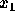
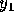
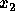
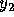
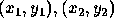

| Jack Straws |
In the game of Jack Straws, a number of plastic or wooden ``straws" are dumped on the table and players try to remove them one-by-one without disturbing the other straws. Here, we are only concerned with if various pairs of straws are connected by a path of touching straws. You will be given a list of the endpoints for some straws (as if they were dumped on a large piece of graph paper) and then will be asked if various pairs of straws are connected. Note that touching is connecting, but also two straws can be connected indirectly via other connected straws.
The input begins with a single positive integer on a line by itself
indicating the number of the cases following, each of them as described below.
This line is followed by a blank line, and there is also a blank line between
two consecutive inputs.
A test case consists of multiple lines of input. The
first line will be an integer n (1 < n < 13) giving the
number of straws on the table. Each of the next n lines contain 4
positive integers,  ,  ,
 and  , giving the coordinates,
 of the endpoints of a single straw. All coordinates will be less
than 100. (Note that the straws will be of varying lengths.) The first straw
entered will be known as straw #1, the second as straw #2, and so on. The
remaining lines of input (except for the final line) will each contain two
positive integers, a and b, both between 1 and n,
inclusive. You are to determine if straw a can be connected to straw
b. When a = 0 = b, the input is terminated.
There will be no illegal input and there are no zero-length straws.
For each test case, the output must follow the description below. The outputs
of two consecutive cases will be separated by a blank line.
You should
generate a line of output for each line containing a pair a and b,
except the final line where a = 0 = b. The line should say simply
``CONNECTED", if straw a is connected to straw b, or
``NOT CONNECTED", if straw a is not connected to straw b.
For our purposes, a straw is considered connected to itself.
1 7 1 6 3 3 4 6 4 9 4 5 6 7 1 4 3 5 3 5 5 5 5 2 6 3 5 4 7 2 1 4 1 6 3 3 6 7 2 3 1 3 0 0
CONNECTED NOT CONNECTED CONNECTED CONNECTED NOT CONNECTED CONNECTED